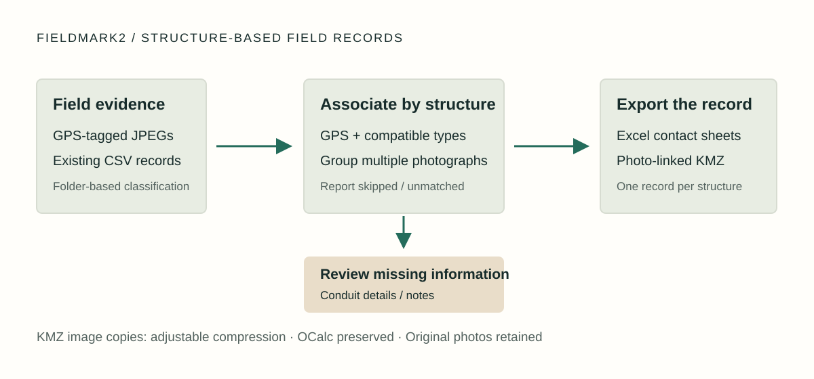

18 / Field records software / Python desktop application
Professional work · Talman Consultants, LLC
FieldMark2: turn GPS photos into field records and maps
I developed FieldMark2 for Talman Consultants, LLC to convert folders of field photographs into structure-based records. The challenge was to associate several images with the right pole or underground structure, combine them with existing CSV data, and produce useful maps without unnecessarily large image archives.
- My contribution
- Workflow design, Python development & iteration
- Tools
- Python · Tkinter · Pillow · Excel / KMZ
- Outcome
- Excel fielding records and KMZ maps from photo folders

Goal: organize evidence around the structure
A folder of photos is not yet a fielding record: several photographs may describe one structure, and existing CSV records may already hold its location and notes. FieldMark2 scans JPEGs and CSVs, extracts GPS metadata, and uses folder names to distinguish poles, handholes, manholes, and related support images.
The output is organized by structure, with Excel rows and photo contact sheets for review and KMZ placemarks containing the associated photographs. For applicable underground records with neither conduit information nor notes, a review dialog collects the missing details before export.
Match records without hiding uncertainty
The processor combines proximity with compatible structure types rather than merging every nearby image. Separate rules associate OCalc and pole-support photographs with poles and marker photographs with handholes. This encodes the relationship between a photograph and the record it supports.
Phone GPS and inconsistent folders can still produce ambiguity. Missing-GPS images are counted as skipped, and unassociated support images are reported as unmatched. Proximity is a practical grouping heuristic, so those counts help users decide what needs manual review; it does not establish survey accuracy.
Trade archive size against useful detail
Embedding full-resolution photos can make KMZs cumbersome. I exposed five compression levels so the user can control the copies included in the map. The default caps ordinary images at 1024 × 768 pixels with JPEG quality 65, preserving aspect ratio without enlarging small images.
OCalc photographs bypass recompression and retain their original bytes, preserving the detail needed for their downstream use. Original input photographs are retained; the size tradeoff applies to exported copies. This exception keeps a convenient global compression setting from damaging a specific class of evidence.
Outcome and technical evidence
A Python/Tkinter tool that turns photo folders into Excel fielding records and photo-linked KMZ maps.
The repository includes installation guidance, a Windows packaging script, and explicitly synthetic sample inputs. Processing checks cover GPS metadata, structure grouping, Excel rows, KMZ image references, compression dimensions, and byte-preserved OCalc images.
This work demonstrates file-format integration, geospatial matching, image handling, and verification of exported artifacts. The checks establish behavior for the sample pipeline; real-device formats, manual review interactions, and KMZ viewer behavior still require deployment-specific checking.
Ownership
Developed by Maxwell Lutter for Talman Consultants, LLC. Copyright © 2026 Talman Consultants, LLC. All rights reserved.